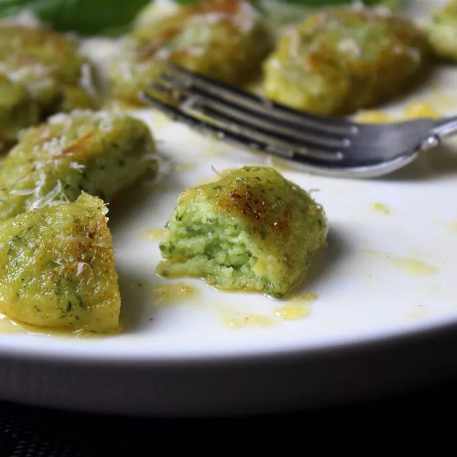

Chef John's Basil Ricotta Gnocchi

Description
This technique turns out beautifully light, tender gnocchi every time and are just as good, if not better, than the classic potato-based gnocchi. And much easier. Plus you can make them ahead of time and brown them in butter before serving.
Ingredients
- 1 cup packed fresh basil leaves
- 2 eggs, lightly beaten
- 1 (12 ounce) container whole-milk ricotta cheese, drained well
- 1 ¼ teaspoons kosher salt
- 1 pinch cayenne pepper
- 1 ½ ounces freshly grated Parmigiano-Reggiano cheese
- 10 tablespoons all-purpose flour
- 2 tablespoons unsalted butter for browning (Optional)
Steps
- Briefly blanch basil leaves in simmering water, about 20 seconds. Transfer immediately to a bowl of cold water to stop the cooking. Drain on towels. Place basil in bowl of a blender. Add eggs. Blend until basil is blended in and mixture achieves an even green color with flecks of basil.
- Place ricotta in a mixing bowl. Add basil/egg mixture, salt, cayenne, Parmesan cheese, and flour. Thoroughly mix together using a spatula; whisk mixture to ensure ingredient are evenly blended. Cover and refrigerate until chilled and firm, about 2 hours.
- Scoop out a small portion of dough using a teaspoon. Using a second spoon, shape into a rounded oval. Repeat until you have enough gnocchi for a batch, about 6 or so.
- Bring a large pot of salted water to a simmer. Drop shaped gnocchi in batches into pot as you form them. After a minute or so they will rise to the surface. Continue simmering until they spring back to the touch when you remove one from the water to test it, 2 to 3 more minutes. Transfer to a plate with a slotted spoon to cool. Repeat with the remaining dough.
- Optional step: Melt butter in a skillet until bubbling. Add cooked gnocchi and brown on each side. Serve with a dusting of grated Parmesan cheese and a drizzle of the butter from the pan.